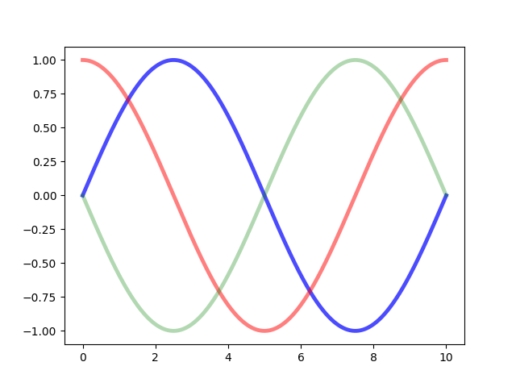

Note
Click here to download the full example code
Rectangle Selector¶
Do a mouseclick somewhere, move the mouse to some destination, release the button. This class gives click- and release-events and also draws a line or a box from the click-point to the actual mouseposition (within the same axes) until the button is released. Within the method 'self.ignore()' it is checked whether the button from eventpress and eventrelease are the same.
Out:
click --> release
from matplotlib.widgets import RectangleSelector
import numpy as np
import matplotlib.pyplot as plt
def line_select_callback(eclick, erelease):
"""
Callback for line selection.
*eclick* and *erelease* are the press and release events.
"""
x1, y1 = eclick.xdata, eclick.ydata
x2, y2 = erelease.xdata, erelease.ydata
print("(%3.2f, %3.2f) --> (%3.2f, %3.2f)" % (x1, y1, x2, y2))
print(" The button you used were: %s %s" % (eclick.button, erelease.button))
def toggle_selector(event):
print(' Key pressed.')
if event.key in ['Q', 'q'] and toggle_selector.RS.active:
print(' RectangleSelector deactivated.')
toggle_selector.RS.set_active(False)
if event.key in ['A', 'a'] and not toggle_selector.RS.active:
print(' RectangleSelector activated.')
toggle_selector.RS.set_active(True)
fig, current_ax = plt.subplots() # make a new plotting range
N = 100000 # If N is large one can see
x = np.linspace(0.0, 10.0, N) # improvement by use blitting!
plt.plot(x, +np.sin(.2*np.pi*x), lw=3.5, c='b', alpha=.7) # plot something
plt.plot(x, +np.cos(.2*np.pi*x), lw=3.5, c='r', alpha=.5)
plt.plot(x, -np.sin(.2*np.pi*x), lw=3.5, c='g', alpha=.3)
print("\n click --> release")
# drawtype is 'box' or 'line' or 'none'
toggle_selector.RS = RectangleSelector(current_ax, line_select_callback,
drawtype='box', useblit=True,
button=[1, 3], # don't use middle button
minspanx=5, minspany=5,
spancoords='pixels',
interactive=True)
plt.connect('key_press_event', toggle_selector)
plt.show()
Keywords: matplotlib code example, codex, python plot, pyplot Gallery generated by Sphinx-Gallery